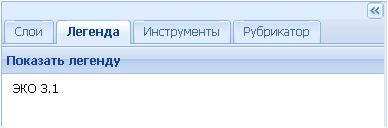

Легенда
Закладка Легенда служит для отображения легенд видимых в рабочем окне карты (активных) тематических слоев.
При начальном запуске приложения с загруженной картоосновой ЭКО 3.1 окно закладки будет пустым, содержащим только название картографической основы.

При активации загруженных тематических слоев окно закладки будет заполняться легендами всех отображаемых в рабочем окне карты слоев. При большом количестве легенд в правой части окна закладки появится полоса прокрутки.